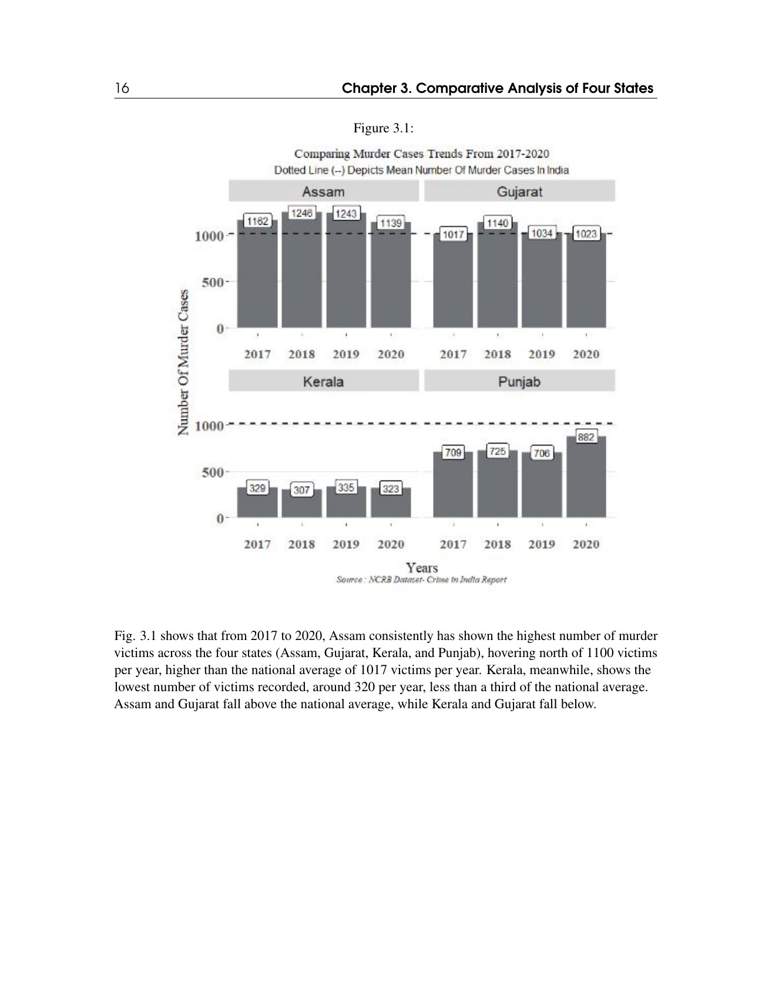
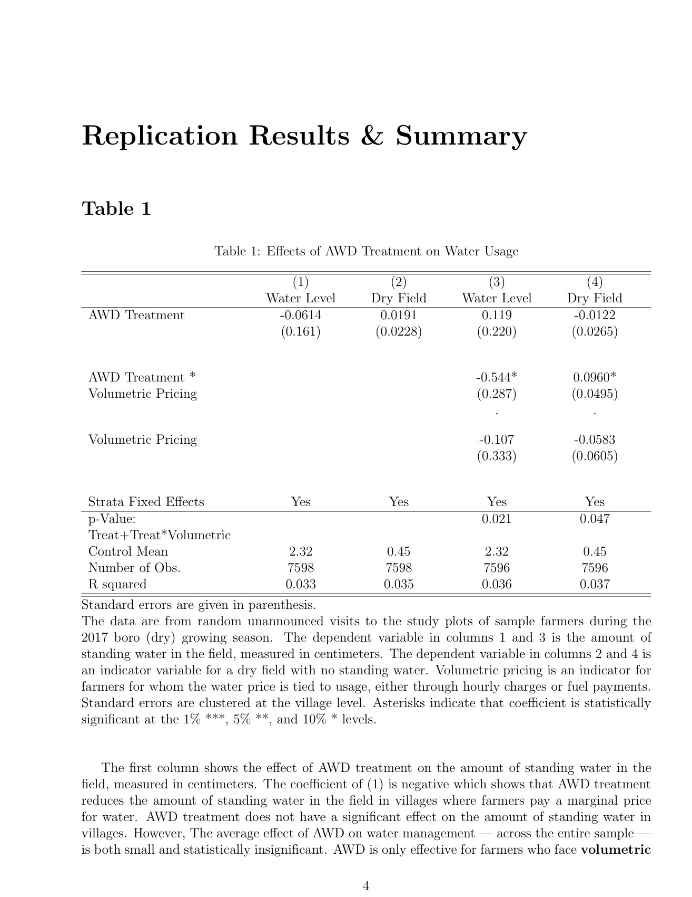
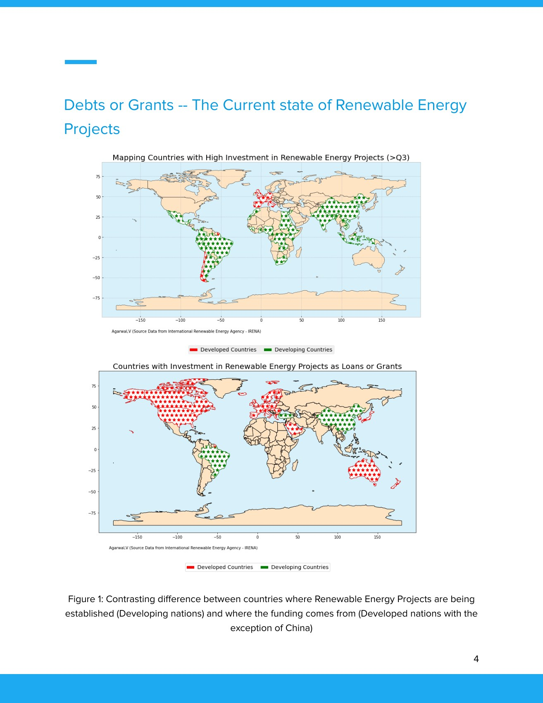

Renewable energy & economic growth
A cross-country study of renewable-energy investment and economic growth, using an augmented Solow model.
BA Economics · Azim Premji University
Papers, notebooks and visual projects from my undergraduate studies.
A cross-country study of renewable-energy investment and economic growth, using an augmented Solow model.

Household facilities and treatment expenditure, studied using NSS health data, descriptive tables and regressions.

A colour-blind-friendly visualisation poster and a Python notebook of charts, maps and plotting experiments.

A Python notebook for extracting and cleaning a public-distribution table from the Jharkhand government website.

A group booklet comparing crime-data categories and visualisations for Assam, Gujarat, Kerala and Punjab.
A two-page historical timeline and two data assignments comparing social indicators, employment and economic change.

A replication report covering Tables 1–8 of a study on irrigation pricing and water conservation.

An analysis of education and weekly earnings across employment groups, using PLFS 2018–19 data.

A paper comparing renewable-energy funding by region, income group and financing instrument.

A group Python notebook that retrieves company statements and calculates a Piotroski-style financial score.

An illustrated presentation and report on carbon capture, utilisation and storage in Indian industry.

A visual data story exploring reported suicide patterns in Rajasthan through comparisons, maps and literature.
No projects found. Try a different search.
Vaibhav Agarwal
I studied Economics at Azim Premji University from 2020 to 2023. This is a selection of my papers, coding assignments and visual projects from that time.
Several pieces were group coursework. Co-authors are listed on the project pages.